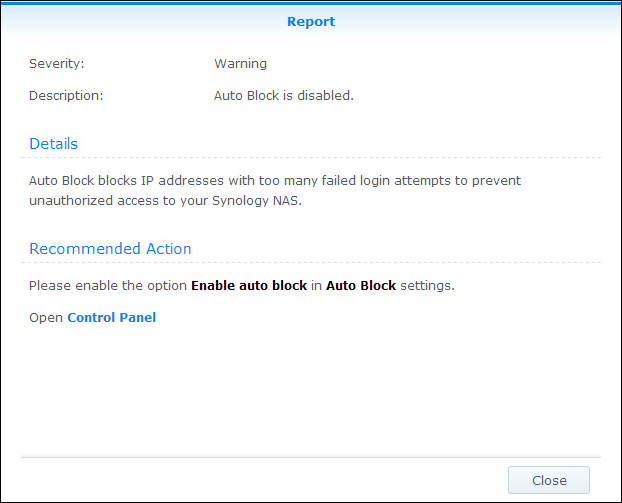

개요
DSM에는 Synology NAS를 안전하게 유지할 수 있는 보안 어드바이저라는 새로운 기능이 들어 있습니다. 보안 어드바이저는 전체 Synology NAS 구성을 스캔하고 보안 상태에 대한 자세한 보고서를 제공합니다. 또한 보안 어드바이저가 식별된 보안 위험을 관리하는 방법을 보여줍니다. 보안 어드바이저를 열고 다음을 수행하는 방법에 대해 알아보십시오.
- 보안 스캔 실행
- 보안 규칙 보고서 보기
- 보안 위험 관리
1. 보안 스캔 실행
- 보안 어드바이저를 처음 열면 Synology NAS를 사용하는 용도를 묻는 메시지가 표시됩니다. 상황에 따라 집 또는 직장을 선택하고 확인을 클릭합니다. 고급 페이지에서 나중에 언제든지 이 설정을 변경할 수 있습니다.
- 보안 어드바이저가 Synology NAS 구성을 스캔하기 시작합니다. 개요 페이지에서 전체 보안 상태, 스캔 진행률 및 결과 요약을 볼 수 있습니다.
- 스캔이 완료되면 보안 규칙의 각 범주에 대한 결과가 표시됩니다. 보안 어드바이저가 각각의 범주에 대한 전체 상태를 제공하고 보안 위험 검사 결과를 요약합니다.


2. 보안 규칙 보고서 보기
- 개요 페이지에서 결과 보기를 클릭합니다.완료된 스캔에 대한 자세한 정보를 보고서별로 볼 수 있습니다.
- 보안 규칙을 두 번 클릭하여 자세한 보고서를 엽니다. 보고서마다 각각의 보안 규칙에 대한 심각도, 설명, 세부 사항 및 권장되는 작업에 대한 정보가 포함되어 있을 수 있습니다.


3. 보안 위험 관리
실패한 보안 규칙의 예를 살펴보고, 관리 방법에 대해 알아보겠습니다.
- 보안 어드바이저가 실패한 보안 규칙에 대한 잠재적인 보안 위험을 식별합니다. 이 예에서는 보안 어드바이저가 "자동 차단이 비활성화된 상태"임을 감지합니다.
- 실패한 보안 규칙을 열어 자세한 정보를 봅니다. 권장되는 작업에 보안 어드바이저가 이 보안 위험을 관리하는 방법에 대한 지침을 제공합니다. 
- 열기를 클릭하여 해당 설정 페이지로 직접 이동하고 권장되는 작업을 따릅니다.
- 결과 페이지에서 규칙을 선택하고 스캔을 클릭하여 실패한 보안 규칙을 다시 스캔합니다.
- 이 보안 규칙에 대해서는 감지된 보안 위험이 없습니다. 보안 어드바이저가 계속해서 잠재적인 보안 위험과 권장되는 작업을 식별하여 이러한 위험을 관리할 수 있도록 도움을 줍니다. 보안 어드바이저에서 정기적으로 스캔을 수행하여 Synology NAS를 안전하게 유지하십시오.